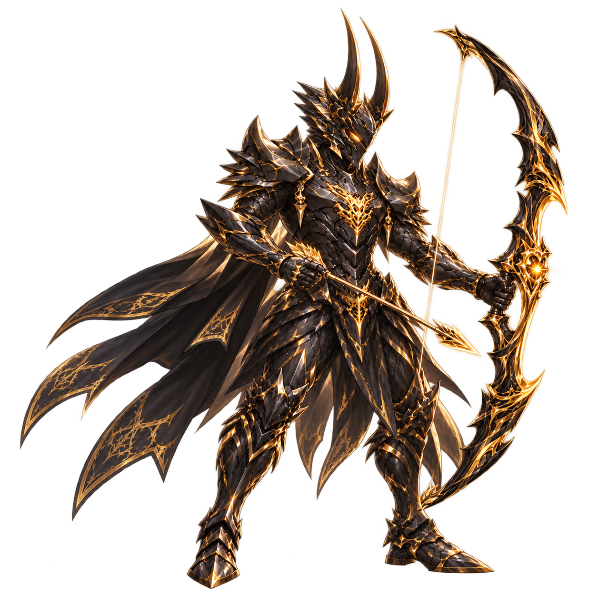
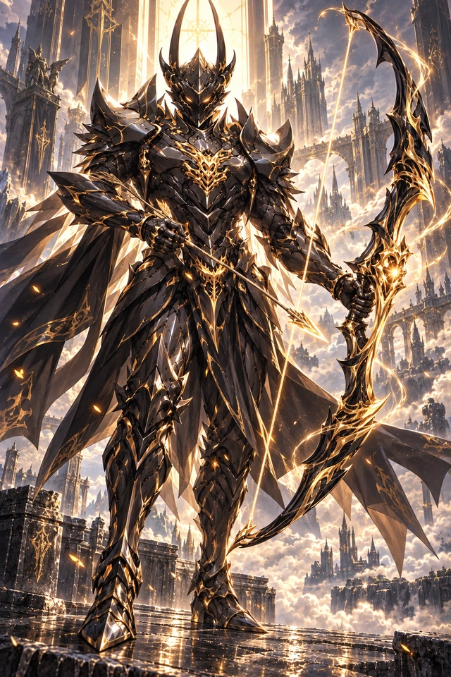

OBSIDIAN & GOLD · ARCHER
베르칸
흑금의 광휘를 두르고,
두 표적에 별을 떨어뜨리다.
검은 갑옷 위로 흐르는 황금빛.
거대한 활에 응축한 힘이 전장을 가르는 궁수.

BERKAN · THE GILDED ARCHERBATTLE REHEARSAL
움직임마다, 빛을 잇다.
캐릭터 56프레임 · 이펙트 60프레임
제자리 사격 · 윤곽 광원 · 독립 오라
리소스 준비 중
공용 V3 전장 준비 중
